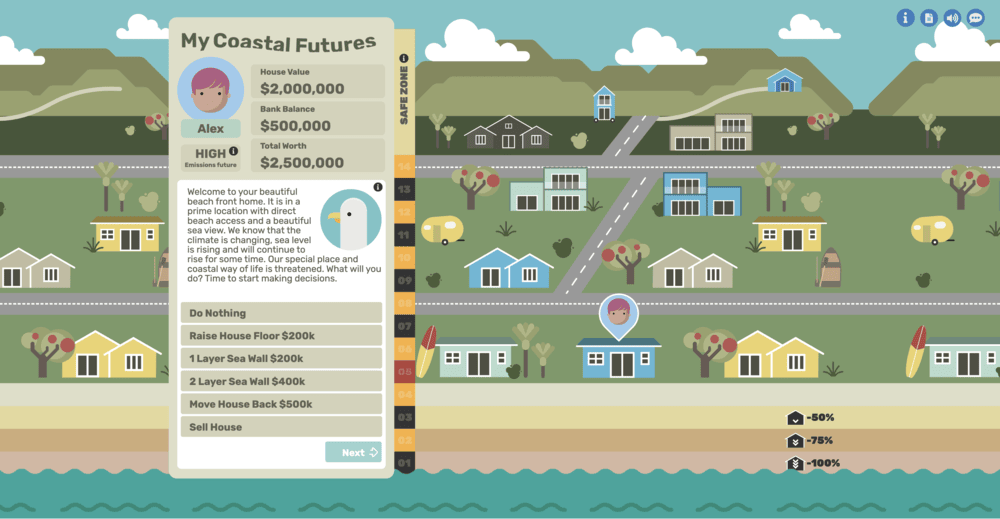
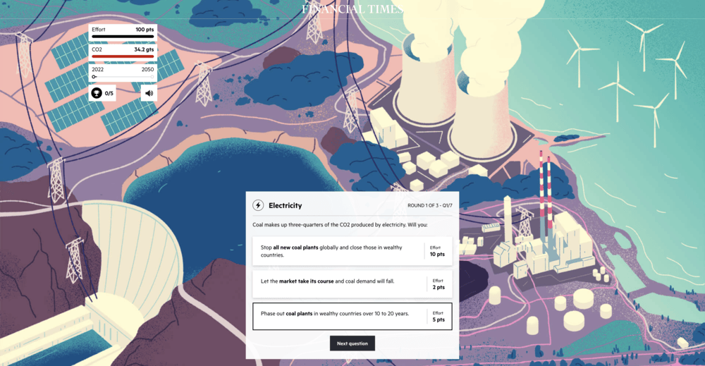

Comparative Analysis
My Coastal Futures

https://mycoastalfutures.niwa.co.nz/This interactive game acts similarly to a board game where you are living in a beach front home that is at risk from rising sea levels and need to make decisions to protect your family and/or your home before sea levels rise too high. This game has an appealing 2D graphic style, and the interface design is clear. The board will visually change in response to sea level changes over time and the player’s decisions, which makes the consequences of each interaction clear. However, I feel like the gameplay experience is a little shallow, as you can immediately win the game by buying a cheap house in the safe zone, and this is the only way to win in the long-term. There isn’t enough of a reason (emotional or practical) to engage in the other gameplay options such as trying to save your house or making adaptations to the seafront.
The Climate Game

https://ig.ft.com/climate-game/This is a choice-based simulation game where you’re in charge of making sure Earth is saved from climate change’s worst effects. You’ll have to go through several rounds where you have to try to make the best decision out of several options to mitigate climate change effects, all while managing your limited “effort” points. The game system and interface design at their core are very simple, but the game makes it clear what impact your choices have both through changes in the narrative and the stats screen after every round. The backgrounds, which change every few questions, are beautiful and keep the webpage visually appealing. The game does a good job of educating the user on what choices are effective or not (both in terms of climate impact and social practicality); I can tell that the developers did a lot of research.